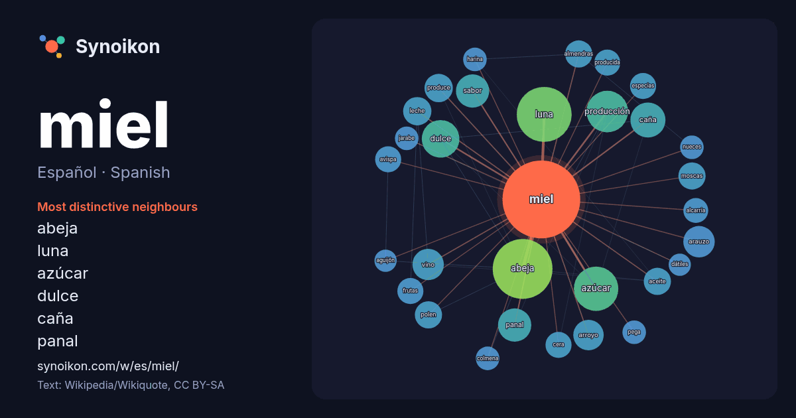

Español · Spanish · word of the day list
miel
“honey” · The words found around it in 952 instances from Spanish Wikipedia, Wikiquote.

Most distinctive neighbours
- abeja 57×
- luna 41×
- azúcar 30×
- dulce 20×
- caña 20×
- panal 19×
- sabor 18×
- arauzo 17×
- vino 15×
- producción 14×
- arroyo 14×
- leche 13×
- moscas 13×
- polen 13×
- almendras 13×
- aceite 12×
- avispa 12×
- especias 12×
- cera 12×
- produce 11×
× = how many times more often than in general Spanish Wikipedia text.
Most frequent neighbours
- abeja 58
- luna 49
- azúcar 32
- producción 28
- dulce 23
- río 22
- caña 20
- panal 18
- sabor 18
- agua 17
- arauzo 16
- vino 16
- arroyo 15
- leche 13
- produce 13
- aceite 12
- almendras 12
- flores 12
- moscas 12
- museo 12
In context
- La miel es un fluido muy dulce y viscoso producido por abejas del género Apis, principalmente la abeja doméstica, a partir del néctar de las flores o Wikipedia snippets · Miel
- Los términos miel de la Alcarria y miel alcarreña son una denominación de origen protegida de la miel propia de la comarca española de La Alcarria, entre Wikipedia snippets · Miel de la Alcarria
- Arauzo de Miel es un municipio y localidad española de la provincia de Burgos, en la comunidad autónoma de Castilla y León. Perteneciente a la comarca Wikipedia snippets · Arauzo de Miel
- La luna de miel es una vacación tomada por una pareja de recién casados tras su boda para celebrar su matrimonio. La Real Academia Española la define como Wikipedia snippets · Luna de miel
- Arroyo de la Miel es uno de los tres distritos en los que está dividida administrativamente la ciudad de Benalmádena (Málaga). Aunque el crecimiento urbanístico Wikipedia snippets · Arroyo de la Miel
- «Sabor A Miel» es una canción interpretada por la cantante mexicana Paulina Rubio, incluida en su álbum debut La Chica Dorada. El sello discográfico EMI Wikipedia snippets · Sabor a miel
- Miel de Liébana es una denominación de origen protegida (DOP) de miel propia de la comarca de Liébana, en Cantabria (España). Fue creada en abril de 2016 Wikipedia snippets · Miel de Liébana
- El río de la Miel es un corto río costero del sur de España, localizado en la provincia de Cádiz, que nace al este de la sierra del Bujeo, a una altitud Wikipedia snippets · Río de la Miel
More Spanish words
- agua
- arte
- bosque
- caballo
- camino
- campana
- canción
- ciencia
- ciudad
- clima
- comida
- corazón
- desierto
- dinero
- dios
- espejo
- estrella
- familia
- fuerza
- gato
- historia
- invierno
- isla
- jardín
- lengua
- lluvia
- madre
- mapa
- montaña
- muerte
- naturaleza
- oro
- otoño
- pan
- perro
- puente
- reloj
- sal
- salud
- silencio
- sombra
- tiempo
- tormenta
- trabajo
- tren
- té
- verano
- verdad
- vida
Precomputed on 2026-10-09 with default settings (±5 words, medium corpus). The interactive map can refresh it with live data.